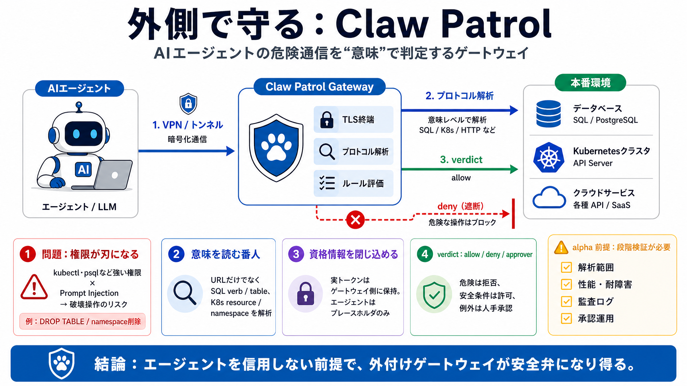

Claw Patrol: an open-source security firewall for agents | Deno
Introducing Claw Patrol: an open-source security firewall for agents. # Claw Patrol: an open-source security firewall fo…

外付けで止める
AIエージェントが本番へ触れるときの危険通信を、ゲートウェイで解析・評価し、ルールで許可/拒否する「セキュリティファイアウォール」です。
権限が刃になる
役に立つために kubectl や psql のような強い権限を渡すほど、プロンプトインジェクションや誤ったツール呼び出しで被害が深刻化します。さらに、挙動（ツール呼び出しのしかた）を後から確実に直しにくい点が問題です。
kubectl delete namespace prod / DROP TABLE
エージェント内側の修正は効きにくいので、外側で制御が必要（信頼しない前提）
意味を読む番人
URLやHTTPメソッドだけでなく、SQLやKubernetesの「意味」を理解して止めます。危険操作を“通行証”なしにできないようにする発想です（日本語：通行制御）。
verb / tables / functions で判定
verb / resource / namespace で判定
ゲートウェイ側でプロトコル解析（外部と切り分け）
通信経路で統制
エージェントの通信を WireGuard / Tailscale のゲートウェイへ誘導し、そこでTLS終端後にルール評価します。
エージェント →（VPN/トンネル）→ ゲートウェイ
プロトコル要素を解析 → HCLルールで verdict（deny/allow/承認）
本物の鍵は置かない
資格情報（実トークン等）はゲートウェイ側で保持し、エージェントにはプレースホルダを送って注入します。エージェントが侵害されても“キーを盗む”前提を崩しやすくします。
プレースホルダを送信（実キーを保持しない）
実トークンを注入（ルール評価と連動）
判断は verdict で
deny/allow だけでなく、モデル判断や Slack の人手承認を連結した「承認チェーン（allow/deny/approver連結）」が可能です。誤検知や例外への運用耐性を上げます。
危険な意味の操作を即拒否
安全条件を満たす操作のみ通す
Slack等で人が最終判断
意味で止める例
例として、Kubernetes secrets の読み取りをデプロイクラスタ横断で禁止するルールが挙げられます。表層のHTTP判定ではなく、意味単位の制御が狙いです。
secrets（resource）を他クラスタへ出さない
DROP 系を（SQL verb等で）遮断
HTTP番は弱い
既存のHTTP中心ゲートでは、Postgresやkubectl等の“プロトコル意味”まで判定しにくいです。結果として、DROP TABLE や secrets 持ち出しのような危険を一意に止められません。
URL/メソッド中心で、SQL/K8sの意図判断が困難
SQL verbやK8s resource/namespaceなど内側要素で判定
alphaの前提
MITライセンスでオープンソースですが、記事上は alpha と明確です。対応プロトコルの網羅性、境界条件、SRE観点（遅延/障害/フェイルセーフ）などの追加情報が不足し得ます。
解析の正確性や特殊ケースで“止まるべきものが通る”可能性
監査ログ、遅延、障害時の扱い、承認待ちのボトルネック確認が必要
要点まとめ（私見）
強みは「信用しない外付け統制」と「意味ベース判定」、残課題は alpha 前提での網羅性・運用保証の不足です。
エージェント侵害前提で、ゲートウェイで許可/拒否・鍵を保持しない構成
プロトコル互換性/境界条件/性能/監査の材料不足 → 検証が不可欠
導入判断のチェック
実運用で使うなら、次を先に埋めると意思決定が安定します（日本語：適用可否の確認）。
どのプロトコル/入力パターンまで保証されるか（回避可能性含む）
遅延、障害時のフェイルセーフ、可用性の設計
verdictと根拠が監査可能な粒度で残るか
承認チェーンがスケールするか（待ち時間/担当/手順）
結論：外側で守る
エージェントを信用しない前提で、TLS終端後にプロトコル意味を評価し、危険操作を遮断する設計が本質です。alphaのため、性能・網羅性・監査・回避耐性を段階検証してから導入するのが現実的です。
References / 関連
※このスライドはユーザー提供テキスト要約です。一次情報としては Claw Patrol の公式リポジトリ/README（MIT、alpha記載）と、HCLルール・対応プロトコルのドキュメントを参照してください。
Introducing Claw Patrol: an open-source security firewall for agents. # Claw Patrol: an open-source security firewall fo…
Claw Patrol is a firewall for AI agents. It sits between your agents and the internet, decides what each request is allo…
Claw Patrol holds agent credentials, parses their traffic at the wire, and gates actions they take with rules you write,…
Deno releases Claw Patrol, a wire-level traffic gateway that gates agent actions against HCL-defined rules before reachi…
## Navigation Menu. We read every piece of feedback, and take your input very seriously. ## Use saved searches to filter…